Introduction
The exercise below explores the different options to consider when working with the hatchery settings.
We will also build upon Tutorial 1 and model multiple brood-year returns (which is why an age structure is needed in the first place).
Operating model
Bio
Let’s build a Bio object for a species that has:
- A life span of three years
- 30 percent of juveniles mature at age 2, while all age 3 animals return
- Spawners at age 2 have lower fecundity than at age 3
- In the first year in the marine environment, survival is 2 percent. In the second year (age 2 to 3), survival is 80 percent (survival values are converted to instantaneous mortality rates)
- En-route mortality after escapement from marine fisheries to spawning grounds (where brood collection and spawning will occur)
Compared to Tutorial 1, we’ve also commented out stock-recruit parameters that describe egg-juvenile survival, as we plan to use the habitat-type specifications to describe freshwater survival.
Harvest
In the Harvest object, we’ll specify:
- A harvest rate on juveniles
u_preterminalas well as on adultsu_terminal. The terminal harvest rate corresponds to the ratio of total catch and return. For preterminal fisheries, the equivalent value in adult equivalents is used for the harvest rate. - Relative vulnerability by age to the fishery in
vulPTandvulT. These specify the proportion of the harvest rate experienced in each age class (1 means highest vulnerability). - No mark-selective fishing (a potential management lever with hatchery-origin fish in the system).
Hatchery object
In the Hatchery object, we’ll specify:
- Ten thousand annual subyearling releases as our target
- One release strategy
n_rwhere the maturity and juvenile mortality of hatchery-origin fish are identical those of natural-origin fish - Hatchery survival (
s_prespawnands_egg_subyearling) and fecundityfec_broodof brood - Lower reproductive success
gammaof hatchery-origin fish that spawn in the natural environment - Some constraints on brood collection, limiting the total escapement
that could be used as brood (
pmax_esc), natural-origin fish that could be used as brood (pmax_NOB), and target proportion of natural-origin fish in the brood (ptarget_NOB)
Hatchery <- new(
"Hatchery",
n_r = 1,
n_subyearling = 100000,
s_prespawn = 0.95,
s_egg_subyearling = 0.7,
Mjuv_HOS = Bio@Mjuv_NOS,
p_mature_HOS = Bio@p_mature,
gamma = 0.8,
m = 1,
pmax_esc = 1,
pmax_NOB = 0.8,
ptarget_NOB = 0.75,
phatchery = NA,
fec_brood = Bio@fec,
fitness_type = c("none", "none")
)Habitat
In the Habitat object, we specify freshwater survival by
life stage:
- Maximum egg incubation survival is 0.21 when egg production is close to zero. Egg survival is density-dependent and is lower. We can set a capacity for egg production equivalent to that produced by 1,000 age 3 spawners (1,000 spawners x 500 eggs/spawner).
- Average egg-fry survival is 0.7, density-independent but stochastic
by simulation and time (take the product of
fry_prodandfry_sdev)
Other life stages are not explicitly modeled, i.e., survival terms are 1.
proyears <- 30
sdev_sd <- 0.1
set.seed(84)
fry_sdev <- EnvStats::rnormTrunc(nsim * proyears, 1, sdev_sd, min = 0, max = 1/0.7) |>
matrix(nsim, proyears)
Habitat <- new(
"Habitat",
use_habitat = TRUE,
egg_rel = "BH",
egg_prod = 0.21,
egg_capacity = 1000 * 5000,
fry_rel = "BH",
fry_prod = 0.7,
fry_capacity = Inf,
fry_sdev = fry_sdev
)Historical
In the Historical object, we can spool-up the population
with 1,000 natural-origin juveniles in each age class. There are no
hatchery-origin juveniles at the start, i.e., reflective of conditions
where we start a hatchery program.
Model run
Let’s run the model:
SOM <- new(
"SOM",
nsim = nsim,
proyears = proyears,
Bio = Bio,
Habitat,
Hatchery,
Harvest,
Historical
)
SMSE <- salmonMSE(SOM)Figures
State variables
We can use the same plotting functions as in Tutorial 1 to see the results of the projection.
Compared to Tutorial 1, there are more state variables to explore, for example, comparing natural-origin spawners (NOS) and hatchery-origin spawners (HOS).
plot_statevar_ts(SMSE, "NOS") # Natural-origin spawners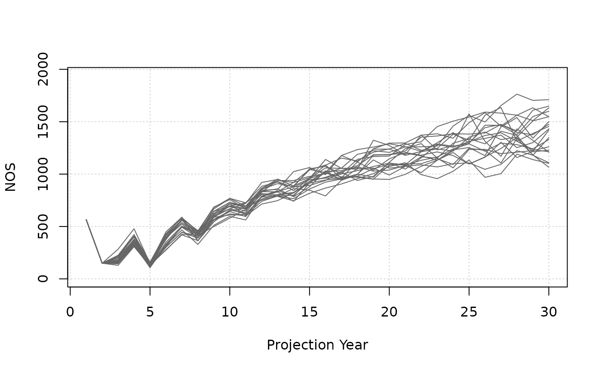
plot_statevar_ts(SMSE, "HOS") # Hatchery-origin spawners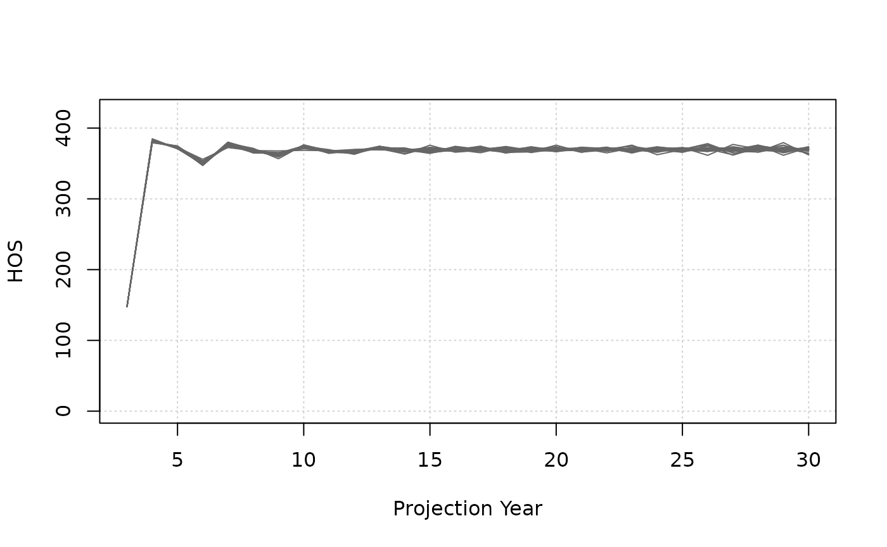
HOS numbers need a couple years to spool-up due to low initial abundance, but stabilize because we can reach our release target during the projection for the most part, and the marine survival and exploitation rates are constant.
NOS increase during the projection as HOS (benefactors from increased egg-juvenile survival in the hatchery) contribute and produce the next generation of spawners that are natural-origin.
Derived quantities
We can also plot derived quantities such as pHOS and
PNI (see ?plot_statevar_ts).
pHOS is zero for the first few years until we have
returns of HOS (recall we started the projection with only a
natural-origin population).
The initial pulse of HOS decreases PNI (and p_wild the
proportion of wild spawners), but values equilibriate by the end of the
projection.
plot_statevar_ts(SMSE, "pHOS_effective") # Natural-origin spawners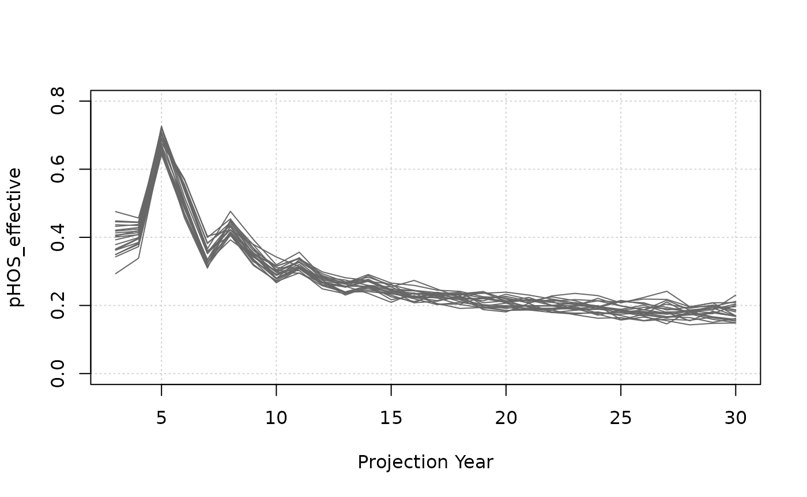
Note below that
pNOBtime series are realized values. For various reasons, our targetpNOBin our hatchery settings may not be realized, e.g., too few returns, so it is important to confirm the targets could be achieved in the simulations.
plot_statevar_ts(SMSE, "pNOB")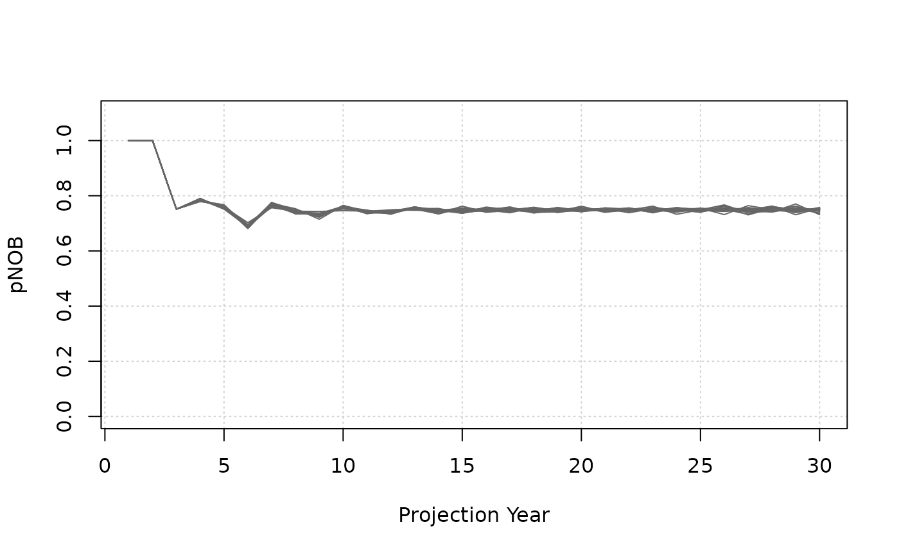
plot_statevar_ts(SMSE, "PNI")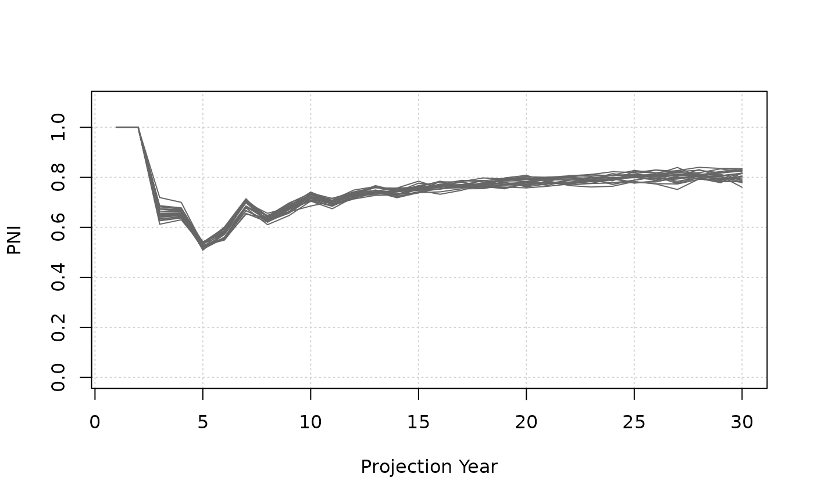
plot_statevar_ts(SMSE, "p_wild", ylab = "Proportion wild spawners")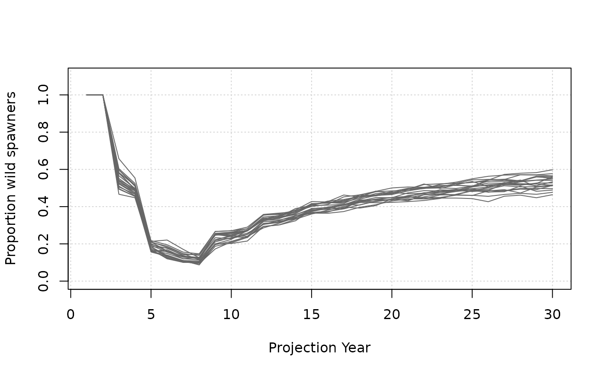
Decision analysis is highly contextual. It’s not clear if our hatchery strategy of 100,000 annual releases is good or bad on its own. We need to see the results relative to other strategies.
We will explore how to organize multiple scenarios in a later tutorial.
For now, let’s explore other hatchery settings.
Multiple release strategies
Hatchery programs may have several release strategies where groups of juveniles are reared and released in different ways that may alter their behaviour.
salmonMSE can model multiple release strategies. For example, earlier releases may behave identical to natural-origin fish while later releases return earlier (higher proportion maturing at age 2).
Here’s how we can update the hatchery inputs for two release strategies.
- The annual release target is still 100,000 but we divide it 25% and
75% between 2 release groups (
n_r = 2andn_subyearlingis a length-2 vector) - The first release strategy behaves identically to natural origin fish with respect to maturity and mortality
- The second release strategy matures earlier
n_r <- 2 # Two release strategies
Mjuv_HOS <- array(0, c(nsim, Bio@maxage-1, proyears, n_r))
p_mature_HOS <- array(0, c(nsim, Bio@maxage, proyears, n_r))
# First release strategy is identical to natural-origin fish
Mjuv_HOS[, , , 1] <- array(Bio@Mjuv_NOS, c(Bio@maxage-1, nsim, proyears)) |> aperm(c(2, 1, 3))
p_mature_HOS[, , , 1] <- array(Bio@p_mature, c(Bio@maxage, nsim, proyears)) |> aperm(c(2, 1, 3))
# Second release strategy matures earlier (higher proportion at age 2, with lower fecundity)
Mjuv_HOS[, , , 2] <- Mjuv_HOS[, , , 1]
p_mature_HOS[, , , 2] <- array(c(0, 0.8, 1), c(Bio@maxage, nsim, proyears)) |> aperm(c(2, 1, 3))
# Create hatchery object
Hatchery_2RS <- new(
"Hatchery",
n_r = n_r,
n_subyearling = c(25000, 75000),
s_prespawn = 0.95,
s_egg_subyearling = 0.7,
Mjuv_HOS = Mjuv_HOS,
p_mature_HOS = p_mature_HOS,
gamma = 0.8,
m = 1,
pmax_esc = 1,
pmax_NOB = 0.8,
ptarget_NOB = 0.75,
phatchery = NA,
fec_brood = Bio@fec,
fitness_type = c("none", "none")
)
# We need to update the historical object as well as the population dimensions change
Historical_2RS <- new(
"Historical",
InitNjuv_NOS = array(1000, c(nsim, Bio@maxage, 1)),
InitNjuv_HOS = array(0, c(nsim, Bio@maxage, Hatchery_2RS@n_r))
)
SOM_2RS <- new(
"SOM",
nsim = nsim,
proyears = proyears,
Bio = Bio,
Habitat,
Hatchery_2RS,
Harvest,
Historical_2RS
)
SMSE_2RS <- salmonMSE(SOM_2RS)Whereas the report() function generates a Markdown
report from a single model run, we alternatively now want to compare
several model runs simultaneously in a figure.
We have the compare() function which generates another
markdown report that plots state variables from separate model runs.
model_names <- c("1 release strategy", "2 release strategies")
compare(list(SMSE, SMSE_2RS), names = model_names)compare_statevar_ts() generates a time series figure
with base graphics. By default, it generates line plots for each
stochastic simulation in the projection (which is messy), so let’s
directly proceed to quantile figures:
model_names <- c("1 release strategy", "2 release strategies")
compare_statevar_ts(list(SMSE, SMSE_2RS), names = model_names, var = "NOS", quant = TRUE)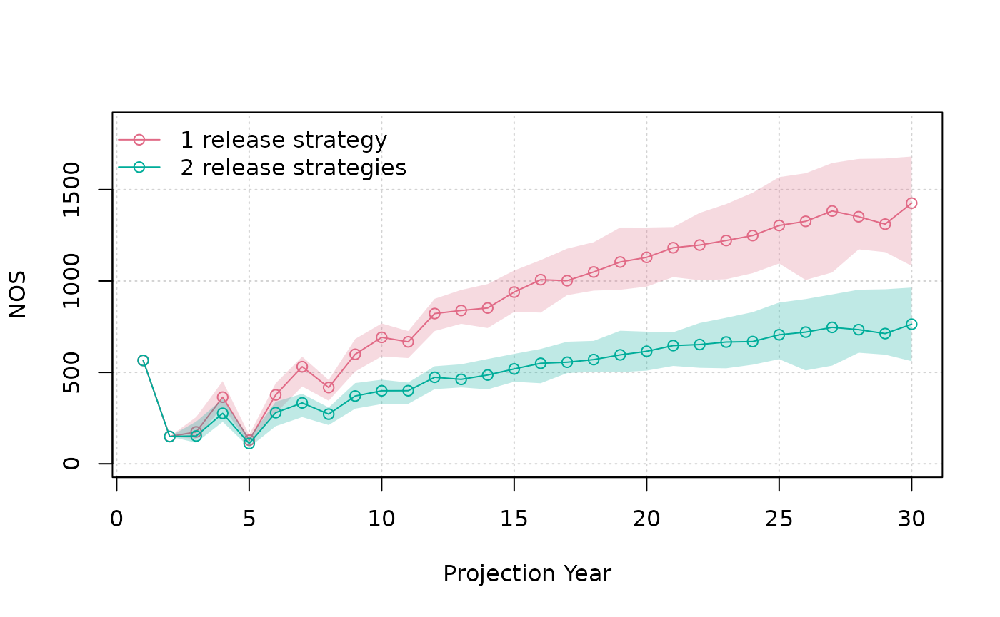
compare_statevar_ts(list(SMSE, SMSE_2RS), names = model_names, var = "HOS", quant = TRUE)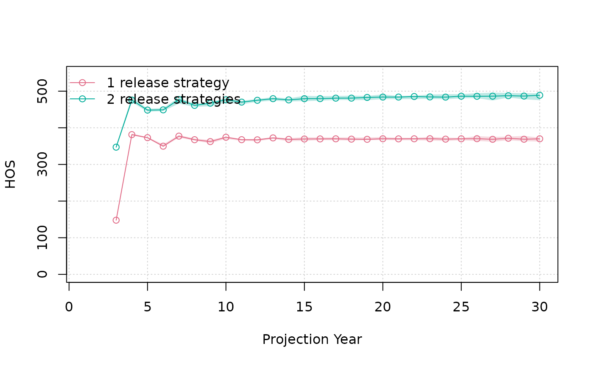
We see that the NOS time series is unchanged, but we have more HOS with 2 release strategies. Younger returns require more brood to meet our release target, but increases returns because the release strategies mature earlier.
Two release strategies does have some impact on reducing p(WILD), but not PNI:
compare_statevar_ts(list(SMSE, SMSE_2RS), names = model_names, var = "PNI", quant = TRUE)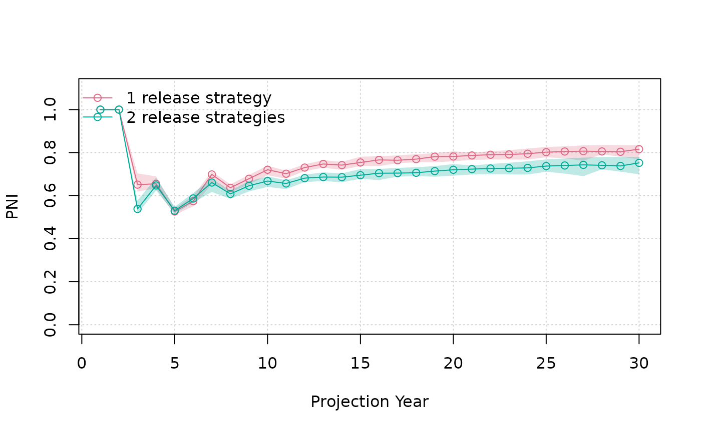
compare_statevar_ts(list(SMSE, SMSE_2RS), names = model_names, var = "p_wild", quant = TRUE)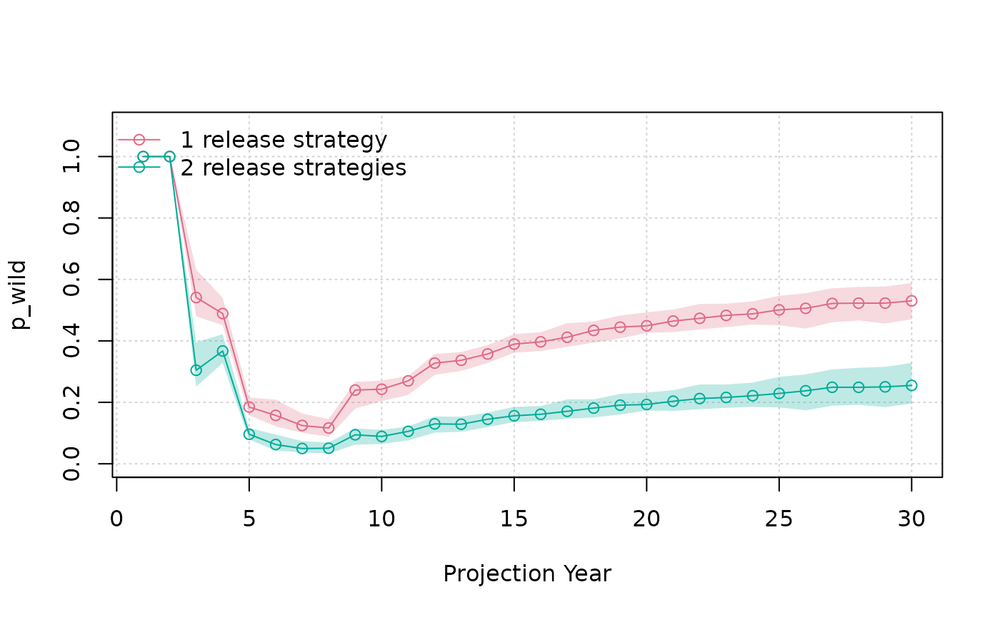
Custom brood rule
To provide flexibility in configuring management strategies, it is possible to write custom functions that describe how the brood is taken based on the in-river return (after en-route mortality).
The function should be of this general form:
brood_rule <- function(NO, HO, stray, m) {
NOB <- array(0, dim(NO)) # matrix by age x life history group
HOB_marked <- HOB_unmarked <- array(0, dim(HO)) # matrix by age x release strategy
HOB_stray <- array(0, dim(stray)) # matrix by age x release strategy
# Write algorithm to calculate brood numbers here
# Return output back to salmonMSE
output <- list(
NOB = NOB,
HOB_marked = HOB_marked,
HOB_unmarked = HOB_unmarked,
HOB_stray = HOB_stray
)
return(output)
}It requires four arguments (the first three are matrices corresponding to the in-river return by age and release strategy, and the fourth is the mark rate, a numeric).
The output is a list containing four items containing the brood in the same matrix dimension as the source, i.e., NOB from NO, HOB from HO.
Example
Let’s simulate an example with a custom rule that only takes two percent of the in-river return as brood if the return exceeds 1000 (it is possible that we don’t meet our release target, but we may want this for PNI management). Otherwise, take up to ten percent (the model will ensure we don’t exceed release target afterwards).
The function looks like this:
brood_rule <- function(NO, HO, stray, m) {
NOB <- array(0, dim(NO)) # matrix by age x life history group
HOB_marked <- HOB_unmarked <- array(0, dim(HO)) # matrix by age x release strategy
HOB_stray <- array(0, dim(stray)) # matrix by age x release strategy
# Write algorithm to calculate brood numbers here
if (sum(NO, HO, stray) > 1000) {
ptake <- 0.02
} else {
ptake <- 0.10
}
NOB[] <- NO * ptake
HOB_marked[] <- HO * m * ptake
HOB_unmarked[] <- HO * (1-m) * ptake
HOB_stray[] <- stray * ptake
# Return output back to salmonMSE
output <- list(
NOB = NOB,
HOB_marked = HOB_marked,
HOB_unmarked = HOB_unmarked,
HOB_stray = HOB_stray
)
return(output)
}Let’s run the projection to compare how this brood rule performs (note that several arguments are not used and commented out):
Hatchery_custom <- new(
"Hatchery",
n_r = 1,
n_subyearling = 100000,
s_prespawn = 0.95,
s_egg_subyearling = 0.7,
Mjuv_HOS = Bio@Mjuv_NOS,
p_mature_HOS = Bio@p_mature,
gamma = 0.8,
m = 1,
f_brood = brood_rule,
#pmax_esc = 1,
#pmax_NOB = 0.8,
#ptarget_NOB = 0.75,
#phatchery = NA,
fec_brood = Bio@fec,
fitness_type = c("none", "none")
)
SOM_custom <- new(
"SOM",
nsim = nsim,
proyears = proyears,
Bio = Bio,
Habitat,
Hatchery_custom,
Harvest,
Historical
)
SMSE_custom <- salmonMSE(SOM_custom)Let’s compare our three model runs:
model_names <- c("1 release strategy", "2 RS", "1 RS + custom rule")
compare(
list(SMSE, SMSE_2RS, SMSE_custom),
names = model_names,
filename = "B1_compare_custom_rule",
dir = here("output")
)With our custom rule, we decrease hatchery production which does give us even more benefit to increase PNI.
model_names <- c("1 release strategy", "2 RS", "1 RS + custom rule")
compare_statevar_ts(
list(SMSE, SMSE_2RS, SMSE_custom),
names = model_names,
var = "Smolt_Rel",
ylab = "Hatchery releases",
quant = TRUE
)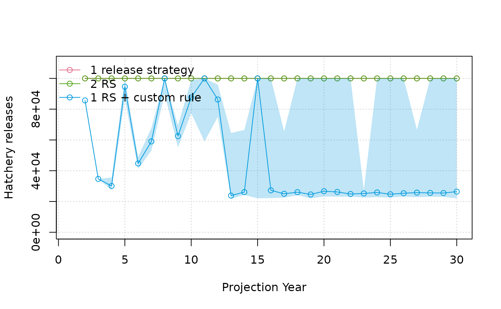
compare_statevar_ts(
list(SMSE, SMSE_2RS, SMSE_custom),
names = model_names,
var = "PNI",
quant = TRUE
)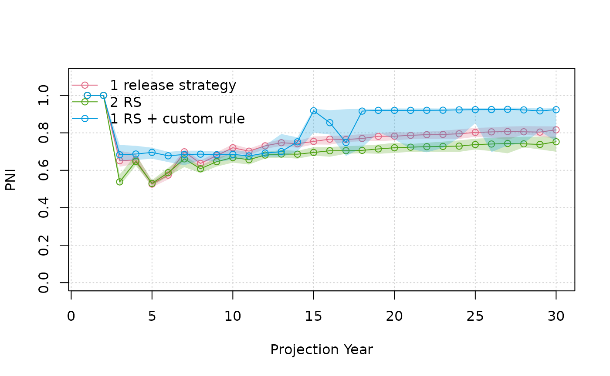